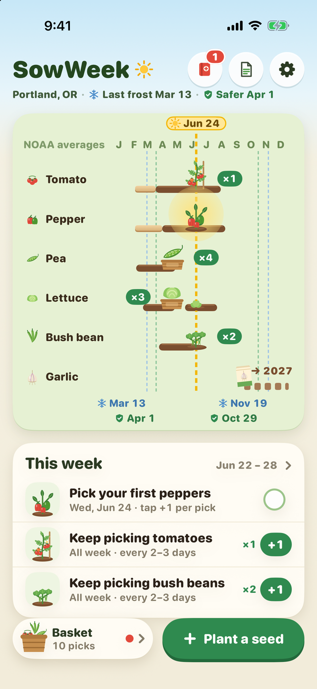

Add the seed packets you have. Each one gets its own row, dated to your local frost: when to start it indoors, when to sow or plant it out, and when to pick. Every week, SowWeek shows only the jobs that are due.

SowWeek finds the nearest NOAA weather station and its 1991–2020 frost dates: the median last frost, and a safer plant-out date for tender crops like tomatoes and peppers. Outside the US, type your own dates. These are historical averages, not a forecast; check the weather the week you plant.
Tick a job when you do it. Sprouts show up about a week after sowing, like real seeds, and the plants grow along their rows through the season. Tap +1 each time you pick and fill your season basket.
80 common vegetables and herbs are built in. Type the weeks or days printed on your seed packet and the row moves with it. Name your variety, or add your own plant by picking a crop it grows like.
Seeds started, plants out after the frost, your first pick. No streaks, no daily reminders, nothing to lose.
One seed has every feature without a subscription. Pro puts your whole seed order on the rows, adds sowing again for a steady harvest, a printed one-page garden (PDF), another garden, and copying this year's list into next year.
$4.99/month, or $29.99/year with a 1-week free trial that is billed automatically when it ends. Or $59.99 once for Lifetime. Subscriptions auto-renew through Apple; manage or cancel in your Apple Account settings.
Frost dates are historical averages from NOAA weather stations. A frost can come earlier or later in any year. SowWeek doesn’t forecast the weather and can’t promise a harvest.
NOAA NCEI U.S. Climate Normals, 1991–2020: for each station, the dates with a 50% and a 10% chance of a 32°F frost after them in spring (last frost) and before them in fall (first frost). SowWeek shows the station’s name and its distance from your ZIP code. Stations where frost is rare or can happen in any month get no frost date; you type your own instead.
ZIP code locations: U.S. Census Bureau ZIP Code Tabulation Area (ZCTA) centroids. The match happens on your device; your ZIP code is not sent anywhere.